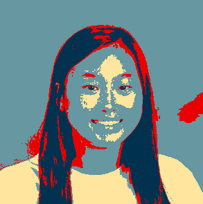
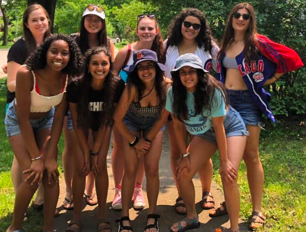
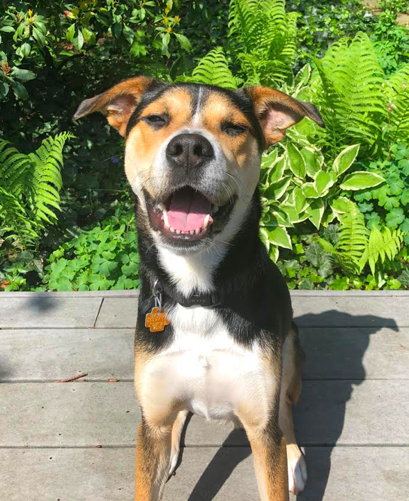
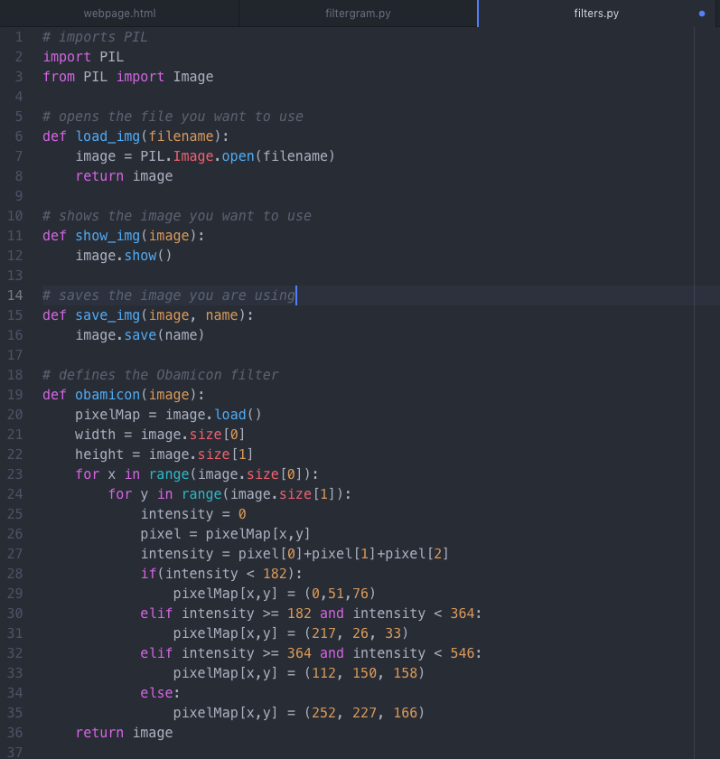
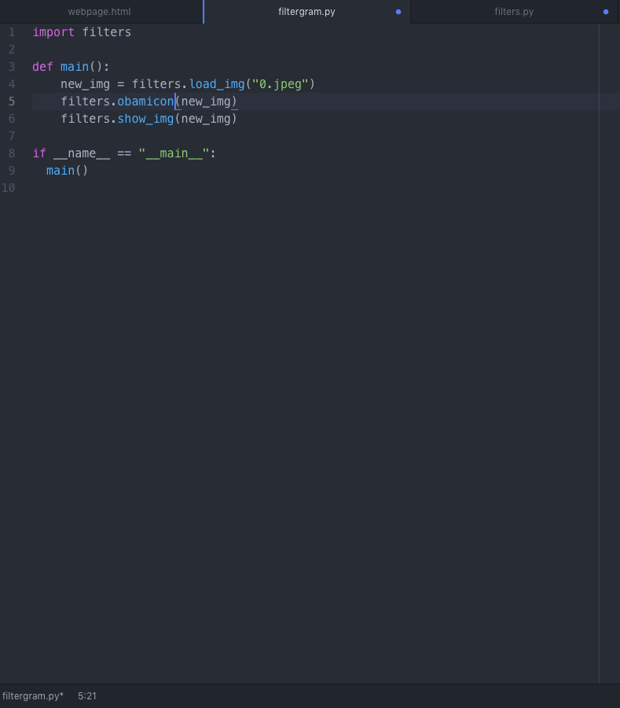
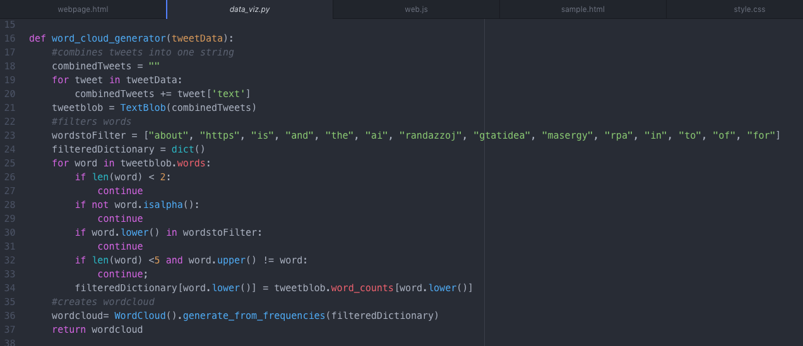
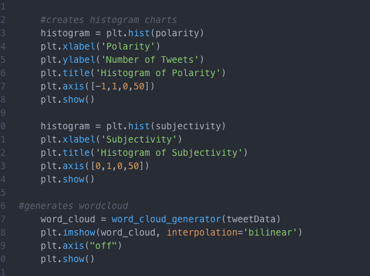
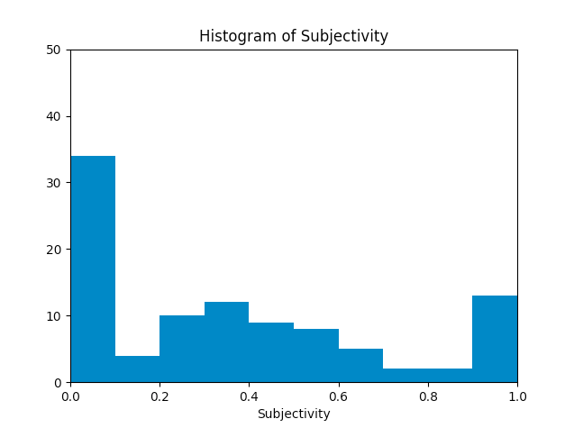
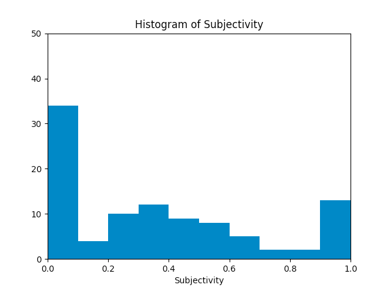

About Me



I am a seventeen year old girl who enjoys exploring computer science concepts and technology. I made this Obamicon filter through Python and I made this website with HTML. I graduate from high school in 2020 and plan on going to college. I want to study computer science or acturarial science. My favorite subject in school is math. I live with my parents, older sister, and my dog in River Forest, IL. My favorite thing to do is hangout with my friends. I believe in women's rights, recycling, and efforts to reduce global warming!
Contact Information: fallogan501@gmail.com
Education: Oak Park and River Forest High School (oprfhs.org)
Experience with Computer Science:
Scratch, Python, HTML, CSS, JavaScript, and Arduino Bots
Projects
Obamicon Filter: I learned how to create the Obamicon filter on Python.


Word Cloud of Tweets: I learned how to analyze data from Twitter to make a word cloud.

Polarity and Subjectivity Histograms of Tweets: I analyzed the same data from Twitter to make histograms based on the polarity and subjectivity of the words from a number of tweets.

 

Maze Game: My group and I created a fun game on Scratch.